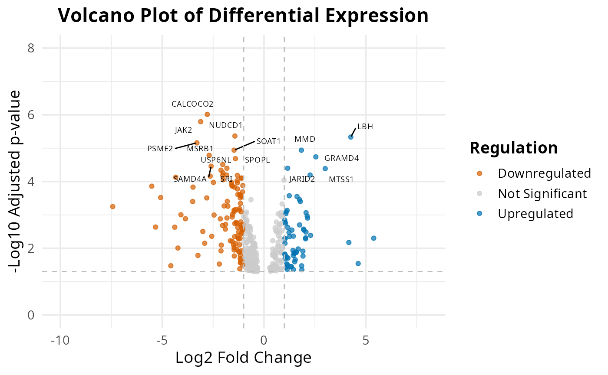

Comparing two datasets with Venn Diagram
Cordeliers Artificial Intelligence and Bioinformatics
2025-05-12
Source:vignettes/venn.Rmd
venn.Rmd
Here is an example of an application for the function
plot_venn. For this script, we used 2 different public
datasets airway and macrophage.
If you want to use this notebook for your projects, it is available here
The airway dataset provides a gene expression dataset
derived from human bronchial epithelial cells, treated
or not with dexamethasone (a corticosteroid).
The macrophage dataset provides bulk RNA-seq count data
from human monocyte-derived macrophages. These cells
were either left untreated or stimulated with interferon-gamma
(IFN-γ).
An experimental condition was applied to each of these cells, left
unstimulated, stimulated with
IFN-gamma, infected with SL1344, or
pre-treated with IFN-g and then infected with
SL1344. For this comparison, we will focus on the
samples of the 2 first conditions (IFN-g, naive).
To compare the datasets, we will do the pre-processing part of the sup and unsup analysis, until the diffexp.
annotation_air <- "dex"
annotation_mac <- "condition_name"
diffexpMethod <- "limma"Import libraries
library(airway)
library(SummarizedExperiment)
library(macrophage)
library(biomaRt)
library(CAIBIrnaseq)Load datasets
#Loading the 2 datasets
data(airway, package="airway");
airway <- airway
data("gse")
macrophage <- gse; rm(gse)
macrophage <- macrophage[,macrophage$condition %in% c("naive", "IFNg")] # focus on these 2 conditionsEven if the datasets are globally build the same way, the names of the variables are not exactly the same, so if we want to keep the same code, we need to redefine a bit the variables.
If you want to know what are the used variables in this part, run
this command line :
colnames(SummarizedExperiment::rowData(exp_data))
You should have these variables (with these exact same names):
- gene_name : The commonly used symbol or name for the
gene (e.g., A1BG).
- gene_id : A unique and stable identifier for the
gene, often from databases like Ensembl (e.g., ENSG00000141510).
- gene_length_kb : The length of the gene measured in
kilobases
- gene_description : A brief textual summary of the
gene’s function or characteristics, often pulled from annotation
databases.
- gene_biotype : A classification of the gene based on
its biological function or transcript type, such as protein_coding,
lncRNA, or pseudogene.
If not, you should look at how your dataset is defined. You might need to run some command line as the following ones:
rowData(airway)$gene_length_kb <-(rowData(airway)$gene_seq_end - rowData(airway)$gene_seq_start) / 1000
mart_air <- useEnsembl("ensembl", dataset = "hsapiens_gene_ensembl")
gene_ids_air <- rowData(airway)$gene_id
annot_air <- getBM(attributes = c("ensembl_gene_id", "description"),
filters = "ensembl_gene_id",
values = gene_ids_air,
mart = mart_air)
matched_air <- match(rowData(airway)$gene_id, annot_air$ensembl_gene_id)
rowData(airway)$gene_description <- annot_air$description[matched_air]
rowData(macrophage)$gene_length_kb <- width(rowRanges(macrophage)) / 1000
rownames(macrophage) <- sub("\\..*$", "", rowData(macrophage)$gene_id)
rowData(macrophage)$gene_id <- sub("\\..*$", "", rowData(macrophage)$gene_id)
rowData(macrophage)$gene_name <- rowData(macrophage)$SYMBOL
macrophage <- macrophage[!is.na(rowData(macrophage)$SYMBOL), ]
mart_mac <- useEnsembl("ensembl", dataset = "hsapiens_gene_ensembl")
annot_mac <- getBM(
attributes = c("ensembl_gene_id", "gene_biotype", "description"),
filters = "ensembl_gene_id",
values = unique(rowData(macrophage)$gene_id),
mart = mart_mac
)
# Correspondance entre gene_id et annot_mac
match_mac <- match(rowData(macrophage)$gene_id, annot_mac$ensembl_gene_id)
# Ajouter les colonnes dans rowData
rowData(macrophage)$gene_biotype <- annot_mac$gene_biotype[match_mac]
rowData(macrophage)$gene_description <- annot_mac$description[match_mac]Pre-processing
Most datasets use ensembl gene ID by default after alignment, so this step rebases the expression data to gene names. This ensures consistency in naming for downstream analyses.
airway <- rebase_gexp(airway, annotation = "gene_name")
macrophage <- rebase_gexp(macrophage, annotation = "SYMBOL") # or gene_name if you renamed the variable Filter
Here, we filter out genes expressed in too few samples or with very low counts. This removes noise from the data and focuses on meaningful gene expressions.
airway <- filter_gexp(airway,
min_nsamp = 1,
min_counts = 1)
macrophage <- filter_gexp(macrophage,
min_nsamp = 1,
min_counts = 1)Quality Control
Visualization of the filtering process to ensure the criteria applied align with the dataset’s characteristics:
colData(airway)$sample_id <- colnames(airway)
plot_qc_filters(airway)
colData(macrophage)$sample_id <- colnames(macrophage)
plot_qc_filters(macrophage)Normalize
Here, we apply a normalization to the expression data, making samples
comparable by reducing variability due to technical differences. For
datasets with few samples, rlog is the preferred
normalization and when more samples are present, vst is
applied.
airway <- normalize_gexp(airway)
assay(macrophage) <- round(assay(macrophage))
macrophage <- normalize_gexp(macrophage)PCA
Principal component analysis (PCA) identifies the major patterns in the dataset. These patterns help explore similarities or differences among samples based on gene expression.
Diffexp
Differential expression analysis is a key step in RNA-seq data interpretation. It aims to identify genes whose expression levels significantly change between experimental conditions—in this case, between treated and untreated airway samples, and between IFNg-stimulated and naive macrophages. By statistically testing gene expression differences, this analysis highlights biologically relevant genes that may be involved in specific cellular responses or disease mechanisms. .
library(edgeR)
colData(airway)$dex <- factor(colData(airway)$dex)
colData(airway)$dex <- factor(colData(airway)$dex, levels = c("untrt", "trt"))
diffexp_air <- diffExpAnalysis(countData = assays(airway)$counts,
sampleInfo = colData(airway),
method = diffexpMethod, cutoff = 10,
annotation = annotation_air)
colData(macrophage)$condition_name <- factor(colData(macrophage)$condition_name)
colData(macrophage)$condition_name <- factor(colData(macrophage)$condition_name, levels = c("IFNg", "naive"))
diffexp_mac <- diffExpAnalysis(countData = assays(macrophage)$counts,
sampleInfo = colData(macrophage),
method = diffexpMethod, cutoff = 10,
annotation = annotation_mac)## Venn Diagram
Once the diffexp done, we can plot the venn diagram. Since the datasets are not directly related, it could be interesting to see if there are still similarities. The comparison can be made between genes, pathways, …
If there are similarities, it can means that some biological processes are activated for different condition types.
This diagram show us how much genes are unique to one dataset, and which are in common. The fisher test value corresponds to the reliability of this analysis. The nearer it is to 0, the most significant this analysis is.
#|message: false
if(tolower(diffexpMethod) == "limma") {
diffexp_air <- diffexp_air |>
dplyr::rename(
log2FoldChange = logFC,
pvalue = P.Value,
padj = adj.P.Val
)
}
if(tolower(diffexpMethod) == "limma"){
diffexp_mac <- diffexp_mac |>
dplyr::rename(
log2FoldChange = logFC,
pvalue = P.Value,
padj = adj.P.Val
)
}
# Exemple : extraction des degs_airgènes DE significatifs
degs_air <- rownames(diffexp_air[diffexp_air$padj < 0.05, ])
degs_mac <- rownames(diffexp_mac[diffexp_mac$padj < 0.05, ])
# universe_size <- length(union(degs_air, degs_mac))
universe_size <- 7000
# Diagramme de Venn
plot_venn(degs_air, degs_mac, universe_size,
v1_name = "Airway", v2_name = "Macrophage",
fills = c("lightgreen", "skyblue"),
title = "DEGs communs et spécifiques")
inter <- intersect(degs_air, degs_mac)
msigdbr::msigdbr_collections() |>
kableExtra::kbl() |>
kableExtra::kable_styling() |>
kableExtra::scroll_box(height = "300px")| gs_collection | gs_subcollection | gs_collection_name | num_genesets |
|---|---|---|---|
| C1 | Positional | 302 | |
| C2 | CGP | Chemical and Genetic Perturbations | 3494 |
| C2 | CP | Canonical Pathways | 19 |
| C2 | CP:BIOCARTA | BioCarta Pathways | 292 |
| C2 | CP:KEGG_LEGACY | KEGG Legacy Pathways | 186 |
| C2 | CP:KEGG_MEDICUS | KEGG Medicus Pathways | 658 |
| C2 | CP:PID | PID Pathways | 196 |
| C2 | CP:REACTOME | Reactome Pathways | 1736 |
| C2 | CP:WIKIPATHWAYS | WikiPathways | 830 |
| C3 | MIR:MIRDB | miRDB | 2377 |
| C3 | MIR:MIR_LEGACY | MIR_Legacy | 221 |
| C3 | TFT:GTRD | GTRD | 505 |
| C3 | TFT:TFT_LEGACY | TFT_Legacy | 610 |
| C4 | 3CA | Curated Cancer Cell Atlas gene sets | 148 |
| C4 | CGN | Cancer Gene Neighborhoods | 427 |
| C4 | CM | Cancer Modules | 431 |
| C5 | GO:BP | GO Biological Process | 7608 |
| C5 | GO:CC | GO Cellular Component | 1026 |
| C5 | GO:MF | GO Molecular Function | 1820 |
| C5 | HPO | Human Phenotype Ontology | 5653 |
| C6 | Oncogenic Signature | 189 | |
| C7 | IMMUNESIGDB | ImmuneSigDB | 4872 |
| C7 | VAX | HIPC Vaccine Response | 347 |
| C8 | Cell Type Signature | 840 | |
| H | Hallmark | 50 |
#|message: false
diffexp_air$gene <- rownames(diffexp_air)
diffexp_mac$gene <- rownames(diffexp_mac)
# Gènes significatifs (par exemple padj < 0.05)
sig_air <- diffexp_air[diffexp_air$padj < 0.05, ]
sig_mac <- diffexp_mac[diffexp_mac$padj < 0.05, ]
# Gènes en commun (par nom de gène)
common_genes <- intersect(sig_air$gene, sig_mac$gene)
# Sous-ensemble des jeux avec uniquement les gènes communs
common_air <- diffexp_air[diffexp_air$gene %in% common_genes, ]
common_mac <- diffexp_mac[diffexp_mac$gene %in% common_genes, ]
plot_exp_volcano(common_air, 15)
plot_exp_volcano(common_mac, 15)
dir.create("results", "airway", "pathways")
dir.create("results", "macrophage", "pathways")
pathway_collections <- c("CP:KEGG_MEDICUS")
pathways <- get_annotation_collection(pathway_collections,
species = "human")
scores_airway <- score_pathways(airway, pathways, verbose = FALSE)
scores_macrophage <- score_pathways(macrophage, pathways, verbose = FALSE)
# Identifier les pathways communs
common_paths <- intersect(rownames(scores_airway), rownames(scores_macrophage))## Warning in prep_scores_hm(exp_data, progeny_scores): 'sample_id' already exists
# Définir un ordre commun basé sur les scores moyens dans airway
order_common <- rowMeans(scores_airway[common_paths, , drop = FALSE]) |>
sort(decreasing = TRUE) |>
names()
# Re-générer les heatmaps dans le même ordre
collections <- pathway_collections |>
paste(collapse = "_") |>
stringr::str_remove("\\:")
# Réordonner les matrices selon cet ordre
scores_airway <- scores_airway[order_common, ]
scores_macrophage <- scores_macrophage[order_common, ]
# Remplacer les anciennes matrices dans les objets
metadata(airway)[["pathway_scores"]] <- scores_airway
metadata(macrophage)[["pathway_scores"]] <- scores_macrophage
dir.create("results", "airway", "pathways")
dir.create("results", "macrophage", "pathways")
# airway
plot_pathway_heatmap(airway, annotations = annotation_air,
fwidth = 9,
cluster_rows = FALSE,
fname = stringr::str_glue("results/airway/pathways/hm_paths_{collections}_top20_aligned.pdf"))
# macrophage
plot_pathway_heatmap(macrophage, annotations = annotation_mac,
fwidth = 9,
cluster_rows = FALSE,
fname = stringr::str_glue("results/macrophage/pathways/hm_paths_{collections}_top20_aligned.pdf"))